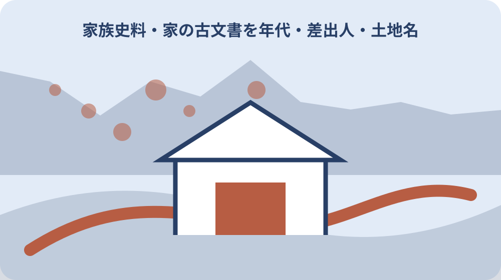

先に結論を確認する
この記事の答え：作れます。読める文字だけを原文欄へ写し、推定欄を分けます。判読不能部分は空欄にせず「未読」と記し、仮番号、形態、保管位置、撮影番号を先に固定します。
森町で最初に照合する条件：森町では町史編さん時に町内古文書調査と12冊の所在目録刊行実績があるため、家の資料を町史掲載済みと決めず、目録名、巻、旧所蔵名を照合する。
動かす前に箱と束の元位置を固定する
古い文書を見つけた直後は、内容を読む前に置かれていた状態を固定する。箱の外観、箱書き、棚の位置、包み、束、ひもの掛かり方を順に撮影し、家屋名、部屋名、棚段、箱番号を記録する。元の並び自体が来歴を示す可能性がある。箱書きは正面だけでなく側面、ふた裏、底面も撮り、読めない墨書の位置を図で残す。撮影前に別室へ運ばず、移動が必要なら移動前後の場所と理由を記録する。
取り出す順番は箱単位とし、最初に箱全体へ仮の保管位置番号を与える。たとえば「母屋二階―北棚―箱03」とし、箱03の中を包み01、束01のように枝番で表す。年代らしい順へ先に並べ替えない。
ほこり、湿り、虫損、破れ、貼り付きが見えた場合は、状態欄へ観察語で記す。「悪い」「古い」ではなく、「右下角に欠損」「二枚が貼り付き」「表面に白色付着」のように場所と見え方を書く。無理に開かない。
最初の確認順は、周囲の安全、箱外観、箱書き、元位置、束の状態、取り出し前写真である。撮影前にひもを解いた場合はその事実と時刻を記録する。家族の記憶だけで元位置を復元せず、不明は不明のまま残す。箱のふたと本体が別になった場合も同じ位置番号を写し、組合せを推測で入れ替えない。作業開始時刻と終了時刻、立会者も記録する。
一点ごとの仮番号を重複なく付ける
仮番号は資料の価値や年代を表す番号ではなく、目の前の一点を再び特定するための識別子である。箱03、包み01、文書001なら「H03-P01-D001」のように階層を含め、同じ番号を別資料へ使わない。番号表の先頭には家屋コードの意味と採番日を記し、別棟の箱に同じ接頭辞を使わない。枝番の区切り記号も統一して手書きと電子版の差を防ぐ。
一枚に見えても折り畳みの内側に別紙が挟まる場合がある。無理なく確認できる範囲で一点か付属物かを記し、判断できなければ「D001付属候補A」とする。後から分離が判明しても元の関係が分かる番号にする。
番号札を資料へ直接書き込まず、資料と一緒に写る別紙へ記す。粘着材や筆記具を原資料へ触れさせない。番号札を外した後でも分かるよう、目録には箱番号、束番号、資料番号、撮影番号を同じ行へ置く。
付番順は元位置の外側から内側、上から下へ統一する。途中で作業を止めたら最後の番号、戻した位置、未処理点数を記録する。番号の欠番は再利用せず、欠番理由を台帳へ残して二重付番を防ぐ。一点を二枚と誤認した場合も旧番号を履歴欄へ残し、統合先番号と判断日を記す。家族が別日に続けても同じ採番規則を使う。
冊子・一紙・折紙・封筒など形態を分ける
形態欄は内容ではなく物理的な姿を記録する。冊子、一紙、折紙、綴じ、封筒、包紙、絵図、帳面など、観察できる範囲の語を使う。専門名が分からなければ「二つ折り一紙」のような見たままの説明でよい。
大きさは開かず測れる範囲を優先し、縦、横、厚みの単位を付ける。折り畳まれている資料は「折畳時」と明記し、広げた寸法を推測しない。枚数も貼り付きがあれば確定せず「見える範囲二枚以上」とする。
国立国会図書館の古典籍向け指針には種別・形態が独立項目として示される。家の仮目録でも、表題や年代と形態を同じ欄へ詰め込まない。形態が分かれば、相談先へ資料量と取扱上の注意を伝えやすい。
確認順は、閉じた状態、表裏、折り、綴じ、付属物、寸法、見える枚数である。開くと損傷しそうなら作業を止め、「未展開」「貼り付きあり」と記す。読解のために状態を悪化させない。寸法を測った道具と単位も残し、端が欠ける場合は現存部分の寸法と明記する。形態名を後で修正しても初回観察文は消さない。

表題は原文と仮題を別欄に記録する
表題欄には資料上に実際に書かれた文字と、整理者が付ける仮題を分けて置く。表紙や端裏に文字があれば原文表題欄へ見えるまま写し、読めない字を意味の通る語へ置き換えない。
原文に表題がない場合は空欄ではなく「表題記載なし」とし、仮題へ「年貢関係らしい書付」など内容候補を書く。ただし仮題には必ず「仮」を付け、後の判読で正式名のように引用されない形にする。
旧字体、異体字、くずし字を現代表記へ直す場合も欄を分ける。原文欄、翻字候補欄、読み候補欄を並べ、誰がいつ読んだかを添える。同じ文字の別解釈が出たら古い候補を消さず併記する。
表題確認は表紙、端裏、冒頭、末尾の順に行い、どこから採った文字か位置を記す。内容をすべて読む前に題名を断定せず、表題位置が不明なら撮影番号だけを先に確定する。仮題を検索用に短くしても原文語を削らず、仮題作成者と作成日を残す。判読候補の根拠画像は文字位置が分かる番号で示す。
推定年代は根拠と幅を添えて残す
年代欄は確定年月日と推定年代を分ける。年号、干支、月日が明記される場合は原文をそのまま写し、西暦換算は別欄へ置く。換算に自信がなければ計算せず、原文表記と参照先だけを残す。
年の記載がなく、人物名、役職、紙、印、土地名から推定する場合は「推定」と根拠を添える。「江戸期」とだけ書くより、「差出人役職の使用時期から推定、未照合」のように判断材料と未確認点を示す。
推定幅は一点の年へ狭めず「明治前半候補」「1890年代以前候補」のように幅で持つ。後の資料で前後関係が分かっても、最初の推定を上書きせず、再判定日、確認者、追加根拠を追記する。
確認順は原文年号、干支、月日、差出人、宛先、同じ束の前後資料、町史類である。束の並びだけを年代根拠にせず、確定、推定、未確認の三段階を使って断定範囲を管理する。西暦換算に使った年表名と頁も記録し、元号の改元年は月日まで照合する。年号の一字が未読なら候補年を一つへ狭めない。
差出人と宛先を役割まで分けて写す
差出人と宛先は人物名だけでなく、文書上の役割を分けて記す。末尾の署名、印、肩書を差出人欄へ、冒頭や脇付にある受取側を宛先欄へ写す。家名と個人名が並ぶ場合も一つへ結合しない。
同じ姓名が家系内で繰り返されることがあるため、現代の親族名と一致しても同一人物と断定しない。役職、居所、年月、関連文書を照合し、「同名候補」「代不明」と記して識別を保留する。
印影は読める文字だけを記し、色、形、位置、個数を観察欄へ残す。印の持ち主を推測で決めず、撮影番号を付けて拡大画像と目録行を結ぶ。印だけの接写でも全体写真との対応を失わない。
読み取り順は宛先候補、本文冒頭、末尾署名、肩書、印、裏書である。差出人と宛先が逆かもしれない場合は両候補を残し、町史の人物索引や専門家の確認前に家系図へ確定情報として移さない。同名候補には資料ごとの肩書と居所を添え、別人の可能性を保つ。印影の向きも全体画像から確認し、接写だけで上下を決めない。
土地名は原表記と現在地候補を分離する
土地名は原文表記を最優先し、現在地候補と別欄にする。旧村名、小字、通称、屋号、寺社名が混在するため、似た現住所を見つけても同じ場所とは限らない。読めた文字の順序と欠字位置を保つ。
土地名欄には「原文」「読み候補」「現在地候補」「根拠資料」「確認状態」を置く。現在地候補が複数なら候補A、候補Bとして並べ、地図上の近さだけで一つへ絞らない。地番と住居表示も別物として扱う。
森町史の資料編、図説、所在古文書目録は照合入口になるが、掲載名と家の文書が一致するだけで同一資料とは決められない。年代、差出人、宛先、形態、旧所蔵名を組み合わせて確認する。
確認順は原文表記、同じ文書内の隣接語、同じ束の別資料、町史索引、古地図、現在資料、窓口照会である。土地所有や境界の根拠へ使う場合は、古文書の記述だけでなく登記や公図等を別に確認する。候補地図には参照年と縮尺を添え、現在の道路形状だけで旧位置を決めない。候補を退けた理由も対照欄へ残す。
保管位置と撮影番号を相互に結び付ける
保管位置は家の中の住所であり、撮影番号は画像の住所である。仮番号H03-P01-D001に対し、保管位置「母屋二階北棚箱03包み01」、撮影番号「IMG_2401全体、IMG_2402裏面」のように結ぶ。
全体、表面、裏面、端裏、印影、損傷部を撮る場合は、同じ仮番号札を各画像へ写し込む。画像だけを見ても一点を特定でき、目録だけを見ても必要画像へ移れる双方向の対応を作る。
撮影日は資料の作成年代ではないため別欄にする。撮影者、撮影機器、ファイル名、保存先、加工有無も残す。傾き補正や明るさ変更をした画像は原画像と区別し、原文の読みに影響する変更を追跡できるようにする。
作業後は一点ごとに元の包みと箱へ戻し、返却前と返却後を撮影する。移動した場合は旧位置、新位置、移動日、理由、担当者を記録する。保管場所の変更を目録へ反映せず記憶だけに頼らない。画像フォルダにも仮番号一覧を置き、ファイル名変更履歴を残す。複製画像を削除するときは原画像が別媒体にあるか先に確認する。
森町所在古文書目録と家の資料を照合する
森町公式の計画案によれば、町は1986年から1999年まで12年をかけて町史編さんと町内古文書調査を行った。成果には通史編2冊、資料編6冊、図説1冊、森町所在古文書目録12冊がある。
所在古文書目録第1集は1988年、第12集は1996年刊行とされる。家の資料を照合するときは、12冊のどの巻にどの家名や地区が収録されるかを確認し、巻数を示さず「町の目録にある」とだけ記さない。
一致候補を見つけたら、目録の資料名、旧所蔵名、年代、点数、記載頁を転記し、家の仮番号と並べる。名称一致は照合候補であり、同一性の確定ではない。形態や差出人が異なる場合は差も残す。
確認順は12冊の所在確認、地区または家名索引、該当頁、記述項目、家の仮目録との比較である。閲覧できない巻は未確認とし、別巻の記述から内容を補わず、図書館や資料館へ所蔵と閲覧方法を尋ねる。照合表には巻名、刊行年、頁、掲載番号、旧所蔵名を分けて写す。掲載点数と現存点数が違う場合は差の理由を推定しない。
資料館へ相談する前に質問票を整える
森町立歴史民俗資料館は1885年建築の旧郡役所を移築・復元した施設で、展示品に農耕具、生活用品、古文書を含む。地域資料を扱う施設だが、家の資料の受入れや鑑定を公式案内だけで約束された業務とは決めない。
公式案内では所在地は森2144、開館は9時30分から16時30分、休館は月曜、火曜、年末年始、入館料は無料である。相談で訪ねる前には、開館情報に加え担当者の在席と資料持参可否を確認する。
質問票には仮番号範囲、点数概数、形態、推定年代、主な土地名、状態、撮影済み範囲を記す。原資料を持ち出す前に、目録表と状態写真で相談可能か、画像送付が可能か、必要な解像度や形式を尋ねる。
連絡順は相談内容の要約、資料点数、状態、仮目録の有無、希望する確認、持参可否、日時である。「価値を知りたい」だけでなく、町史目録との照合、読みの確認、保存上の注意など質問を分けて伝える。回答者の所属、回答日、持参条件、次の連絡先を記録する。持参不可なら画像や目録で確認できる範囲を改めて尋ねる。
家族へ渡せる仮目録と取扱記録を作る
家族へ渡す仮目録は、仮番号、元位置、形態、原文表題、仮題、原文年代、推定年代、差出人、宛先、土地名、状態、撮影番号、確認者、確認日を一行に持つ。読めない欄も削らず未読または未確認とする。
国立国会図書館の古典籍向け指針では、日付、内容・注記、種別・形態、利用条件・権利、関連情報、内容が別項目で示される。家の台帳でも一欄へ長文を詰めず、後で検索や修正ができる項目へ分ける。
画像の利用条件も決める。家族内共有、専門家への相談、公開の三段階を分け、個人名、住所、印影、財産情報が写る画像を無断公開しない。権利や公開可否が不明なら「家族内のみ」として保留する。
引継ぎ時は家族が任意の仮番号から原資料の保管位置と全体写真へ戻れるか試す。戻れなければ番号体系または保存先を直す。最新版だけでなく変更履歴と元位置写真を残し、誰が並べ替えたか追えるようにする。紙の一覧と電子版の更新日を合わせ、差があればどちらを原本台帳とするか決める。閲覧者と持出日も別表で管理する。
大石の視点：読めない段階で土地判断を急がない
ここからは私見である。私は小さな不動産業者として、古文書に土地名があるだけで現在の所有地、境界、通行権を決めない。古い記述は家や地域の履歴を知る手掛かりになるが、現在の権利関係を直接確定する資料とは限らない。
公的事実として確認できるのは、森町が町史編さん時に町内古文書を調査し、所在古文書目録12冊を刊行したこと、歴史民俗資料館が古文書を含む展示を行うこと、国の指針に項目分けの考え方があることである。
不動産の確認では、仮目録で見つけた土地名や家名を手掛かり欄へ置き、現在住所、地番、登記名義、公図、測量図、接道、境界標を別の資料で確認する。古文書の読解候補を登記事実へ置き換えない。
実務の順番は、元位置撮影、仮番号、形態、表題、年代、差出人、宛先、土地名、保管位置、撮影番号、町史目録照合、専門窓口相談である。売却未定でもこの順で残せば、家族が資料を失わず次の確認者へ渡せる。土地判断へ進む際は古文書の仮説欄と登記確認欄を分け、未読文字の再確認日を決める。家族の同意なく画像公開へ進まない。